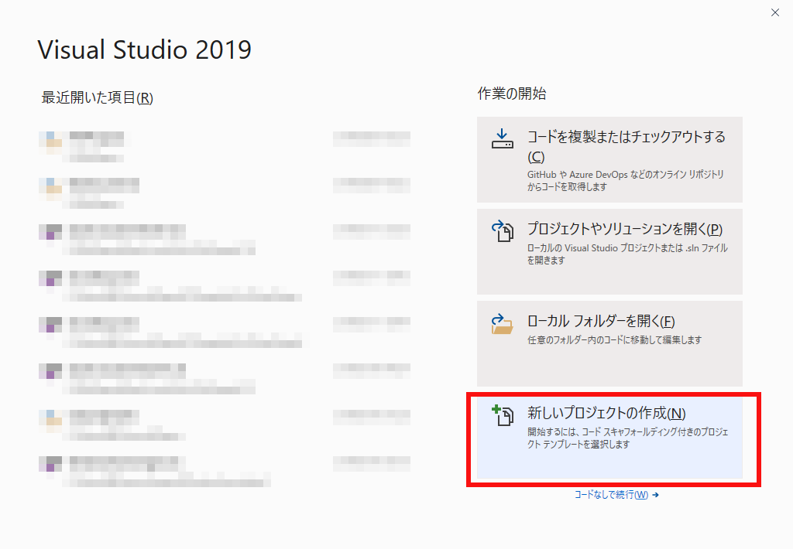
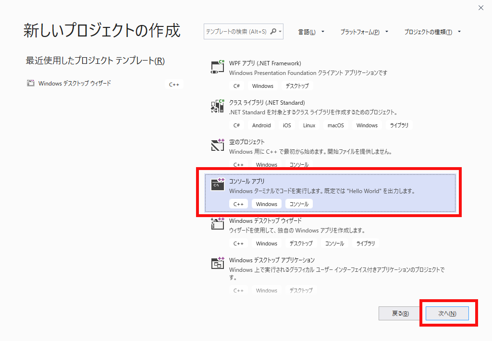
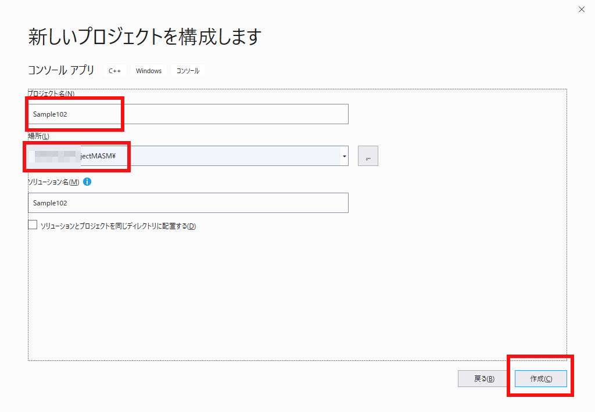
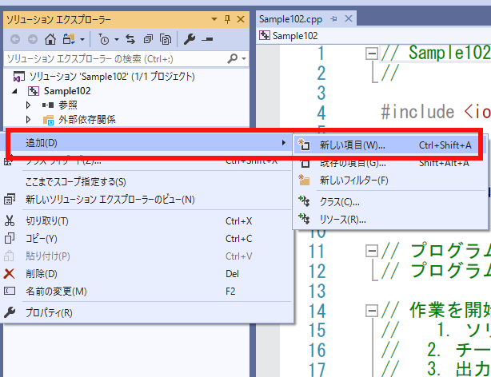
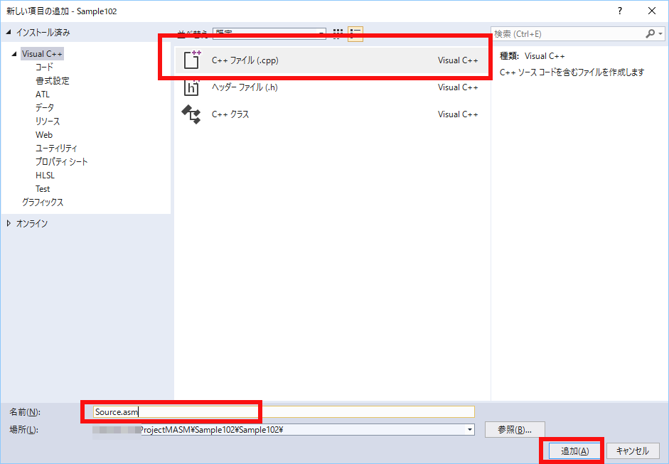
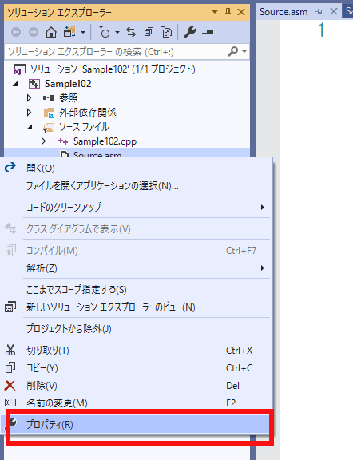
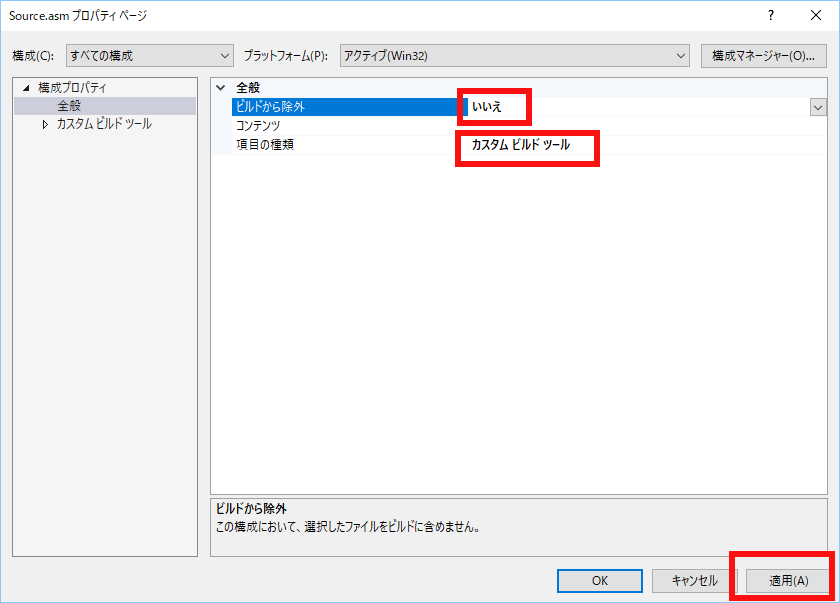
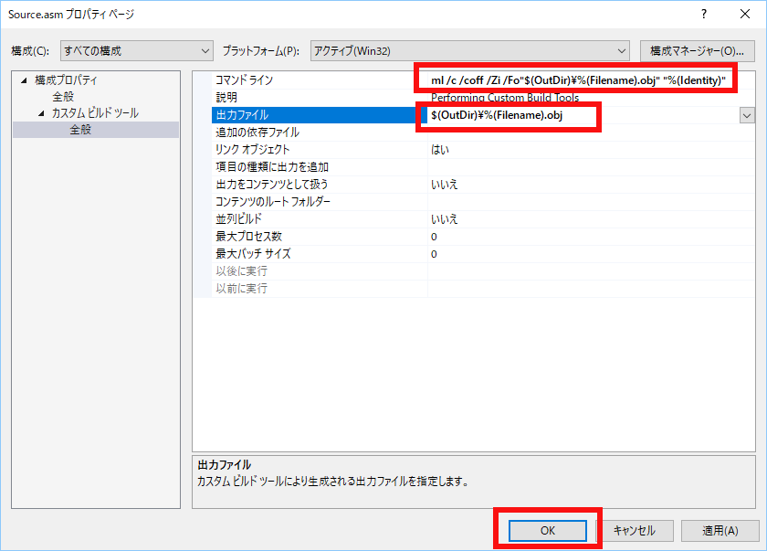

図0102a
コンソールアプリを選択して次へをクリックします。

図0102b
プロジェクト名を記入し場所を選択して作成をクリックします。

図0102c
すると新しいソリューションが出来上がります。

図0102d
Source.asmの名前で追加します。

図0102e
Source.asmを右クリックして、プロパティを選択します。

図0102f
ビルドから除外をいいえにして項目の種類をカスタムビルドツールにして適用すると左に設定できる横目が出ます。

図0102g
コマンドラインおよび出力ファイルを以下のように書き換えます。
コマンドライン: ml /c /coff /Zi /Fo"$(OutDir)\%(Filename).obj" "%(Identity)" 出力ファイル: $(OutDir)\%(Filename).obj

図0102h
Source.asmに以下のようにコードを記述します。
.model flat, c
.code
;int func102(int a,int b)
func102 proc a:DWORD,b:DWORD
mov eax,a
add eax,b
ret
func102 endp
end
#include <iostream>
extern "C" int func102(int, int);
int main()
{
std::cout << func102(20,50) << "\n";
}
70 ...\Sample102\Debug\Sample102.exe (プロセス 7396) は、コード 0 を伴って終了しました。 このウィンドウを閉じるには、任意のキーを押してください . . .